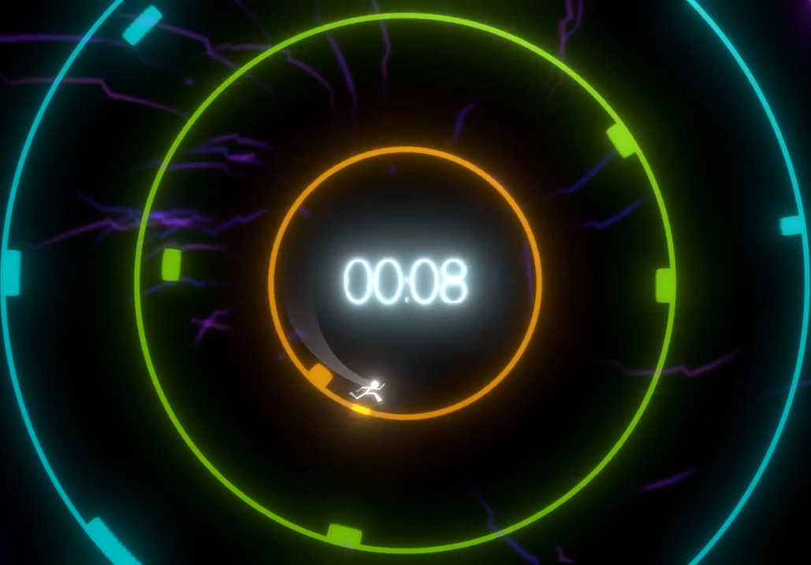

Nous avons réalisé
NeonStorm en 48 heures avec Unity lors du
PixelChallenge à Québec UQAC, le thème était
"The perfect storm".
Nous étions la même équipe de 6 que lors de la WonderJam (cf.
NeonJam) et j'étais cette fois-ci responsable de l'implémentation
des objets à placer sur le terrain ainsi que de l'animation du personnage.

NeonStorm, dans le même style graphique que NeonJam, est un runner en cercle.
Pour passer un niveau, il faut accumuler de la vitesse en évitant les obstacles.
Quand le seuil de vitesse est atteint, le cercle se brise
et le personnage tombe dans le cercle suivant.
Pour esquiver les obstacles, le joueur peut sauter, glisser, et glisser en l'air
Si le joueur prend trop d'obstacles d'un coup il perd.
Le but est donc de finir tous les niveaux le plus vite possible.